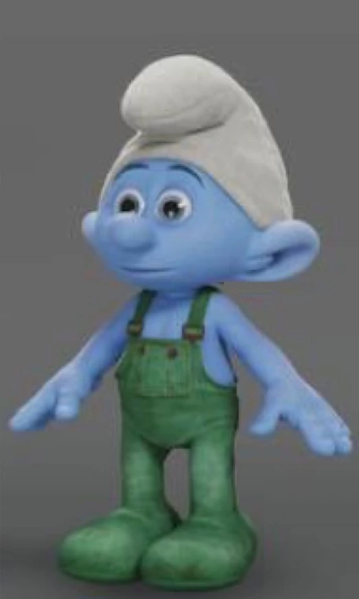

Les SMOURF sont des petites créatures d'un mètre. Les personnes dont leur nom commençent par Jean-Corentin appelent communément les SMOURF des tortues volantes. Pourquoi? Bonne question.
Si vous en avez marre d'en apprendre beaucoup trop que vous ne le devez sur une créature non existante que vous ne trouverez jamais dans la belle vie polluée qu'on a, vous pouvez retourner sur la page du concours de canards.